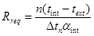
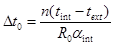
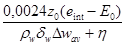

Система нормативных документов в строительстве
СТРОИТЕЛЬНЫЕ
НОРМЫ И ПРАВИЛА
РОССИЙСКОЙ ФЕДЕРАЦИИ
ТЕПЛОВАЯ ЗАЩИТА ЗДАНИЙ
СНиП 23-02-2003
ГОСУДАРСТВЕННЫЙ КОМИТЕТ
РОССИЙСКОЙ ФЕДЕРАЦИИ
ПО СТРОИТЕЛЬСТВУ И ЖИЛИЩНО-КОММУНАЛЬНОМУ КОМПЛЕКСУ
(ГОССТРОЙ
РОССИИ)
Москва 2004
ПРЕДИСЛОВИЕ
1 РАЗРАБОТАНЫ НИИ строительной физики Российской академии архитектуры и строительных наук, ЦНИИЭП жилища, Ассоциацией инженеров по отоплению, вентиляции, кондиционированию воздуха, теплоснабжению и строительной теплофизике, Мосгосэкспертизой и группой специалистов
ВНЕСЕНЫ Управлением технического нормирования, стандартизации и сертификации в строительстве и ЖКХ Госстроя России
2 ПРИНЯТЫ И ВВЕДЕНЫ В ДЕЙСТВИЕ с 1 октября 2003 г. постановлением Госстроя России от 26.06.2003 г. № 113
3 ВЗАМЕН СНиП II-3-79*
СОДЕРЖАНИЕ
Настоящие строительные нормы и правила устанавливают требования к тепловой защите зданий в целях экономии энергии при обеспечении санитарно-гигиенических и оптимальных параметров микроклимата помещений и долговечности ограждающих конструкций зданий и сооружений.
Требования к повышению тепловой защиты зданий и сооружений, основных потребителей энергии, являются важным объектом государственного регулирования в большинстве стран мира. Эти требования рассматриваются также с точки зрения охраны окружающей среды, рационального использования невозобновляемых природных ресурсов и уменьшения влияния «парникового» эффекта и сокращения выделений двуокиси углерода и других вредных веществ в атмосферу.
Настоящие нормы затрагивают часть общей задачи энергосбережения в зданиях. Одновременно с созданием эффективной тепловой защиты, в соответствии с другими нормативными документами принимаются меры по повышению эффективности инженерного оборудования зданий, снижению потерь энергии при ее выработке и транспортировке, а также по сокращению расхода тепловой и электрической энергии путем автоматического управления и регулирования оборудования и инженерных систем в целом.
Нормы по тепловой защите зданий гармонизированы с аналогичными зарубежными нормами развитых стран. Эти нормы, как и нормы на инженерное оборудование, содержат минимальные требования, и строительство многих зданий может быть выполнено на экономической основе с существенно более высокими показателями тепловой защиты, предусмотренными классификацией зданий по энергетической эффективности.
Настоящие нормы предусматривают введение новых показателей энергетической эффективности зданий - удельного расхода тепловой энергии на отопление за отопительный период с учетом воздухообмена, теплопоступлений и ориентации зданий, устанавливают их классификацию и правила оценки по показателям энергетической эффективности как при проектировании и строительстве, так и в дальнейшем при эксплуатации. Нормы обеспечивают тот же уровень потребности в тепловой энергии, что достигается при соблюдении второго этапа повышения теплозащиты по СНиП II-3 с изменениями № 3 и 4, но предоставляют более широкие возможности в выборе технических решений и способов соблюдения нормируемых параметров.
Требования настоящих норм и правил прошли апробацию в большинстве регионов Российской Федерации в виде территориальных строительных норм (ТСН) по энергетической эффективности жилых и общественных зданий.
Рекомендуемые методы расчета теплотехнических свойств ограждающих конструкций для соблюдения принятых в этом документе норм, справочные материалы и рекомендации по проектированию излагаются в своде правил «Проектирование тепловой защиты зданий».
В разработке настоящего документа принимали участие: Ю.А. Матросов и И.Н. Бутовский (НИИСФ РААСН); Ю.А. Табунщиков (НП «АВОК»); B.C. Беляев (ОАО ЦНИИЭПжилища); В.И. Ливчак (Мосгосэкспертиза); В.А. Глухарев (Госстрой России); Л.С. Васильева (ФГУП ЦНС).
СНиП 23-02-2003
СТРОИТЕЛЬНЫЕ НОРМЫ И ПРАВИЛА РОССИЙСКОЙ ФЕДЕРАЦИИ
ТЕПЛОВАЯ ЗАЩИТА ЗДАНИЙ
THERMAL PERFORMANCE OF THE BUILDINGS
Дата введения 2003-10-01
Настоящие нормы и правила распространяются на тепловую защиту жилых, общественных, производственных, сельскохозяйственных и складских зданий и сооружений (далее - зданий), в которых необходимо поддерживать определенную температуру и влажность внутреннего воздуха.
Нормы не распространяются на тепловую защиту:
жилых и общественных зданий, отапливаемых периодически (менее 5 дней в неделю) или сезонно (непрерывно менее трех месяцев в году);
временных зданий, находящихся в эксплуатации не более двух отопительных сезонов;
теплиц, парников и зданий холодильников.
Уровень тепловой защиты указанных зданий устанавливается соответствующими нормами, а при их отсутствии - по решению собственника (заказчика) при соблюдении санитарно-гигиенических норм.
Настоящие нормы при строительстве и реконструкции существующих зданий, имеющих архитектурно-историческое значение, применяются в каждом конкретном случае с учетом их исторической ценности на основании решений органов власти и согласования с органами государственного контроля в области охраны памятников истории и культуры.
В настоящих нормах и правилах использованы ссылки на нормативные документы, перечень которых приведен в приложении А.
В настоящем документе использованы термины и определения, приведенные в приложении Б.
4.1 Строительство зданий должно осуществляться в соответствии с требованиями к тепловой защите зданий для обеспечения установленного для проживания и деятельности людей микроклимата в здании, необходимой надежности и долговечности конструкций, климатических условий работы технического оборудования при минимальном расходе тепловой энергии на отопление и вентиляцию зданий за отопительный период (далее - на отопление).
Долговечность ограждающих конструкций следует обеспечивать применением материалов, имеющих надлежащую стойкость (морозостойкость, влагостойкость, биостойкость, стойкость против коррозии, высокой температуры, циклических температурных колебаний и других разрушающих воздействий окружающей среды), предусматривая в случае необходимости специальную защиту элементов конструкций, выполняемых из недостаточно стойких материалов.
4.2 В нормах устанавливают требования к:
приведенному сопротивлению теплопередаче ограждающих конструкций зданий;
ограничению температуры и недопущению конденсации влаги на внутренней поверхности ограждающей конструкции, за исключением окон с вертикальным остеклением;
удельному показателю расхода тепловой энергии на отопление здания;
теплоустойчивости ограждающих конструкций в теплый период года и помещений зданий в холодный период года;
воздухопроницаемости ограждающих конструкций и помещений зданий;
защите от переувлажнения ограждающих конструкций;
теплоусвоению поверхности полов;
классификации, определению и повышению энергетической эффективности проектируемых и существующих зданий;
контролю нормируемых показателей, включая энергетический паспорт здания.
4.3 Влажностный режим помещений зданий в холодный период года в зависимости от относительной влажности и температуры внутреннего воздуха следует устанавливать по таблице 1.
Таблица 1 - Влажностный режим помещений зданий
|
Влажность внутреннего воздуха, %, при температуре, °С |
|||
|
до 12 |
св. 12 до 24 |
св. 24 |
|
|
Сухой |
До 60 |
До 50 |
До 40 |
|
Нормальный |
Св. 60 до 75 |
Св. 50 до 60 |
Св. 40 до 50 |
|
Влажный |
Св. 75 |
» 60 » 75 |
» 50 » 60 |
|
Мокрый |
- |
Св. 75 |
Св. 60 |
4.4 Условия эксплуатации ограждающих конструкций А или Б в зависимости от влажностного режима помещений и зон влажности района строительства для выбора теплотехнических показателей материалов наружных ограждений следует устанавливать по таблице 2. Зоны влажности территории России следует принимать по приложению В.
Таблица 2 - Условия эксплуатации ограждающих конструкций
|
Условия эксплуатации А и Б в зоне влажности (по приложению В) |
|||
|
сухой |
нормальной |
влажной |
|
|
Сухой |
А |
А |
Б |
|
Нормальный |
А |
Б |
Б |
|
Влажный или мокрый |
Б |
Б |
Б |
4.5 Энергетическую эффективность жилых и общественных зданий следует устанавливать в соответствии с классификацией по таблице 3. Присвоение классов D, Е на стадии проектирования не допускается. Классы А, В устанавливают для вновь возводимых и реконструируемых зданий на стадии разработки проекта и впоследствии их уточняют по результатам эксплуатации. Для достижения классов А, В органам администраций субъектов Российской Федерации рекомендуется применять меры по экономическому стимулированию участников проектирования и строительства. Класс С устанавливают при эксплуатации вновь возведенных и реконструированных зданий согласно разделу 11. Классы D, E устанавливают при эксплуатации возведенных до 2000 г. зданий с целью разработки органами администраций субъектов Российской Федерации очередности и мероприятий по реконструкции этих зданий. Классы для эксплуатируемых зданий следует устанавливать по данным измерения энергопотребления за отопительный период согласно ГОСТ 31168.
Таблица 3 - Классы энергетической эффективности зданий
|
Наименование класса энергетической эффективности |
Величина отклонения расчетного (фактического) значения удельного расхода тепловой энергии на отопление здания qhdes от нормативного, % |
Рекомендуемые мероприятия органами администрации субъектов РФ |
|
|
Для новых и реконструированных зданий |
|||
|
А |
Очень высокий |
Менее минус 51 |
Экономическое стимулирование |
|
В |
Высокий |
От минус 10 до минус 50 |
То же |
|
С |
Нормальный |
От плюс 5 до минус 9 |
- |
|
Для существующих зданий |
|||
|
D |
Низкий |
От плюс 6 до плюс 75 |
Желательна реконструкция здания |
|
Е |
Очень низкий |
Более 76 |
Необходимо утепление здания в ближайшей перспективе |
5.1 Нормами установлены три показателя тепловой защиты здания:
а) приведенное сопротивление теплопередаче отдельных элементов ограждающих конструкций здания;
б) санитарно-гигиенический, включающий температурный перепад между температурами внутреннего воздуха и на поверхности ограждающих конструкций и температуру на внутренней поверхности выше температуры точки росы;
в) удельный расход тепловой энергии на отопление здания, позволяющий варьировать величинами теплозащитных свойств различных видов ограждающих конструкций зданий с учетом объемно-планировочных решений здания и выбора систем поддержания микроклимата для достижения нормируемого значения этого показателя.
Требования тепловой защиты здания будут выполнены, если в жилых и общественных зданиях будут соблюдены требования показателей «а» и «б» либо «б» и «в». В зданиях производственного назначения необходимо соблюдать требования показателей «а» и «б».
5.2 С целью контроля соответствия нормируемых данными нормами показателей на разных стадиях создания и эксплуатации здания следует заполнять согласно указаниям раздела 12 энергетический паспорт здания. При этом допускается превышение нормируемого удельного расхода энергии на отопление при соблюдении требований 5.3.
Сопротивление теплопередаче элементов ограждающих конструкций
5.3 Приведенное сопротивление теплопередаче R0, м2×°С/Вт, ограждающих конструкций, а также окон и фонарей (с вертикальным остеклением или с углом наклона более 45°) следует принимать не менее нормируемых значений Rred, м2×°С/Вт, определяемых по таблице 4 в зависимости от градусо-суток района строительства Dd, °С×сут.
Таблица 4 - Нормируемые значения сопротивления теплопередаче ограждающих конструкций
|
Градусо-сутки отопительного периода Dd, °С×сут |
Нормируемые значения сопротивления теплопередаче Rreq, м2×°С/Вт, ограждающих конструкций |
|||||
|
Стен |
Покрытий и перекрытий над проездами |
Перекрытий чердачных, над неотапливаемыми подпольями и подвалами |
Окон и балконных дверей, витрин и витражей |
Фонарей с вертикальным остеклением |
||
|
1 |
2 |
3 |
4 |
5 |
6 |
7 |
|
1 Жилые, лечебно-профилактические и детские учреждения, школы, интернаты, гостиницы и общежития |
2000 |
2,1 |
3,2 |
2,8 |
0,3 |
0,3 |
|
4000 |
2,8 |
4,2 |
3,7 |
0,45 |
0,35 |
|
|
6000 |
3,5 |
5,2 |
4,6 |
0,6 |
0,4 |
|
|
8000 |
4,2 |
6,2 |
5,5 |
0,7 |
0,45 |
|
|
10000 |
4,9 |
7,2 |
6,4 |
0,75 |
0,5 |
|
|
12000 |
5,6 |
8,2 |
7,3 |
0,8 |
0,55 |
|
|
а |
- |
0,00035 |
0,0005 |
0,00045 |
- |
0,000025 |
|
b |
- |
1,4 |
2,2 |
1,9 |
- |
0,25 |
|
2 Общественные, кроме указанных выше, административные и бытовые, производственные и другие здания и помещения с влажным или мокрым режимом |
2000 |
1,8 |
2,4 |
2,0 |
0,3 |
0,3 |
|
4000 |
2,4 |
3,2 |
2,7 |
0,4 |
0,35 |
|
|
6000 |
3,0 |
4,0 |
3,4 |
0,5 |
0,4 |
|
|
8000 |
3,6 |
4,8 |
4,1 |
0,6 |
0,45 |
|
|
10000 |
4,2 |
5,6 |
4,8 |
0,7 |
0,5 |
|
|
12000 |
4,8 |
6,4 |
5,5 |
0,8 |
0,55 |
|
|
а |
- |
0,0003 |
0,0004 |
0,00035 |
0,00005 |
0,000025 |
|
b |
- |
1,2 |
1,6 |
1,3 |
0,2 |
0,25 |
|
3 Производственные с сухим и нормальным режимами |
2000 |
1,4 |
2,0 |
1,4 |
0,25 |
0,2 |
|
4000 |
1,8 |
2,5 |
1,8 |
0,3 |
0,25 |
|
|
6000 |
2,2 |
3,0 |
2,2 |
0,35 |
0,3 |
|
|
8000 |
2,6 |
3,5 |
2,6 |
0,4 |
0,35 |
|
|
10000 |
3,0 |
4,0 |
3,0 |
0,45 |
0,4 |
|
|
12000 |
3,4 |
4,5 |
3,4 |
0,5 |
0,45 |
|
|
а |
- |
0,0002 |
0,00025 |
0,0002 |
0,000025 |
0,000025 |
|
b |
- |
1,0 |
1,5 |
1,0 |
0,2 |
0,15 |
|
Примечания 1 Значения Rreq для величин Dd, отличающихся от табличных, следует определять по формуле Rreq = a Dd + b, (1) где Dd - градусо-сутки отопительного периода, °С×сут, для конкретного пункта; а, b - коэффициенты, значения которых следует принимать по данным таблицы для соответствующих групп зданий за исключением графы 6 для группы зданий в поз. 1, где для интервала до 6000 °С×сут: а = 0,000075, b = 0,15; для интервала 6000 - 8000 °С×сут: а = 0,00005, b = 0,3; для интервала 8000 °С×сут и более: а = 0,000025; b = 0,5. 2 Нормируемое приведенное сопротивление теплопередаче глухой части балконных дверей должно быть не менее чем в 1,5 раза выше нормируемого сопротивления теплопередаче светопрозрачной части этих конструкций. 3 Нормируемые значения сопротивления теплопередаче чердачных и цокольных перекрытий, отделяющих помещения здания от неотапливаемых пространств с температурой tc (text < tc < tint), следует уменьшать умножением величин указанных в графе 5, на коэффициент n, определяемый по примечанию к таблице 6. При этом расчетную температуру воздуха в теплом чердаке, теплом подвале и остекленной лоджии и балконе следует определять на основе расчета теплового баланса. 4 Допускается в отдельных случаях, связанных с конкретными конструктивными решениями заполнений оконных и других проемов, применять конструкции окон, балконных дверей и фонарей с приведенным сопротивлением теплопередаче на 5 % ниже установленного в таблице. 5 Для группы зданий в поз. 1 нормируемые значения сопротивления теплопередаче перекрытий над лестничной клеткой и теплым чердаком, а также над проездами, если перекрытия являются полом технического этажа, следует принимать как для группы зданий в поз. 2. |
||||||
Градусо-сутки отопительного периода Dd, °С×сут, определяют по формуле
Dd = (tint - tht) zht, (2)
где tint - расчетная средняя температура внутреннего воздуха здания, °С, принимаемая для расчета ограждающих конструкций группы зданий по поз. 1 таблицы 4 по минимальным значениям оптимальной температуры соответствующих зданий по ГОСТ 30494 (в интервале 20 - 22 °С), для группы зданий по поз. 2 таблицы 4 - согласно классификации помещений и минимальных значений оптимальной температуры по ГОСТ 30494 (в интервале 16 - 21 °С), зданий по поз. 3 таблицы 4 - по нормам проектирования соответствующих зданий;
tht, zht - средняя температура наружного воздуха, °С, и продолжительность, сут, отопительного периода, принимаемые по СНиП 23-01 для периода со средней суточной температурой наружного воздуха не более 10 °С - при проектировании лечебно-профилактических, детских учреждений и домов-интернатов для престарелых, и не более 8 °С - в остальных случаях.
5.4 Для производственных зданий с избытками явной теплоты более 23 Вт/м3 и зданий, предназначенных для сезонной эксплуатации (осенью или весной), а также зданий с расчетной температурой внутреннего воздуха 12 °С и ниже приведенное сопротивление теплопередаче ограждающих конструкций (за исключением светопрозрачных) Rreq, м2×°С/Вт, следует принимать не менее значений, определяемых по формуле

где п - коэффициент, учитывающий зависимость положения наружной поверхности ограждающих конструкций по отношению к наружному воздуху и приведенный в таблице 6;
Dtn - нормируемый температурный перепад между температурой внутреннего воздуха tint и температурой внутренней поверхности tint ограждающей конструкции, °С, принимаемый по таблице 5;
aint - коэффициент теплоотдачи внутренней поверхности ограждающих конструкций, Вт/(м2×°С), принимаемый по таблице 7;
tint - то же, что и в формуле (2);
text - расчетная температура наружного воздуха в холодный период года, °С, для всех зданий, кроме производственных зданий, предназначенных для сезонной эксплуатации, принимаемая равной средней температуре наиболее холодной пятидневки обеспеченностью 0,92 по СНиП 23-01.
В производственных зданиях, предназначенных для сезонной эксплуатации, в качестве расчетной температуры наружного воздуха в холодный период года text, °C, следует принимать минимальную температуру наиболее холодного месяца, определяемую как среднюю месячную температуру января по таблице 3* СНиП 23-01, уменьшенную на среднюю суточную амплитуду температуры воздуха наиболее холодного месяца (таблица 1* СНиП 23-01).
Нормативное значение Rreq сопротивления теплопередаче перекрытий над проветриваемыми подпольями следует принимать по СНиП 2.11.02.
5.5 Для определения нормируемого сопротивления теплопередаче внутренних ограждающих конструкций Rreq при разности расчетных температур воздуха между помещениями 6 °С и выше в формуле (3) следует принимать п = 1 и вместо text - расчетную температуру воздуха более холодного помещения.
Для теплых чердаков и техподполий, а также в неотапливаемых лестничных клетках жилых зданий с применением квартирной системы теплоснабжения расчетную температуру воздуха в этих помещениях следует принимать по расчету теплового баланса, но не менее 2 °С для техподполий и 5 °С для неотапливаемых лестничных клеток.
5.6 Приведенное сопротивление теплопередаче R0, м2×°С/Вт, для наружных стен следует рассчитывать для фасада здания либо для одного промежуточного этажа с учетом откосов проемов без учета их заполнений.
Приведенное сопротивление теплопередаче ограждающих конструкций, контактирующих с грунтом, следует определять по СНиП 41-01.
Приведенное сопротивление теплопередаче светопрозрачных конструкций (окон, балконных дверей, фонарей) принимается на основании сертификационных испытаний; при отсутствии результатов сертификационных испытаний следует принимать значения по своду правил.
5.7 Приведенное сопротивление теплопередаче R0, м2×°С/Вт, входных дверей и дверей (без тамбура) квартир первых этажей и ворот, а также дверей квартир с неотапливаемыми лестничными клетками должно быть не менее произведения 0,6×Rreq (произведения 0,8×Rreq - для входных дверей в одноквартирные дома), где Rreq - приведенное сопротивление теплопередаче стен, определяемое по формуле (3); для дверей в квартиры выше первого этажа зданий с отапливаемыми лестничными клетками - не менее 0,55 м2×°С/Вт.
Ограничение температуры и конденсации влаги на внутренней поверхности ограждающей конструкции
5.8 Расчетный температурный перепад Dt0, °С, между температурой внутреннего воздуха и температурой внутренней поверхности ограждающей конструкции не должен превышать нормируемых величин Dtn, °С, установленных в таблице 5, и определяется по формуле
Таблица 5 - Нормируемый температурный перепад между температурой внутреннего воздуха и температурой внутренней поверхности ограждающей конструкции
|
Нормируемый температурный перепад Dtn, °С, для |
||||
|
наружных стен |
покрытий и чердачных перекрытий |
перекрытий над проездами, подвалами и подпольями |
зенитных фонарей |
|
|
1. Жилые, лечебно-профилактические и детские учреждения, школы, интернаты |
4,0 |
3,0 |
2,0 |
tint - td |
|
2. Общественные, кроме указанных в поз. 1, административные и бытовые, за исключением помещений с влажным или мокрым режимом |
4,5 |
4,0 |
2,5 |
tint - td |
|
3. Производственные с сухим и нормальным режимами |
tint - td, но не более 7 |
0,8 (tint - td), но не более 6 |
2,5 |
tint - td |
|
4. Производственные и другие помещения с влажным или мокрым режимом |
tint - td |
0,8 (tint - td) |
2,5 |
- |
|
5. Производственные здания со значительными избытками явной теплоты (более 23 Вт/м3) и расчетной относительной влажностью внутреннего воздуха более 50 % |
12 |
12 |
2,5 |
tint - td |
|
Обозначения: tint - то же, что в формуле (2); td - температура точки росы, °С, при расчетной температуре tint и относительной влажности внутреннего воздуха, принимаемым согласно 5.9 и 5.10, СанПиН 2.1.2.1002, ГОСТ 12.1.005 и СанПиН 2.2.4.548, СНиП 41-01 и нормам проектирования соответствующих зданий. Примечание - Для зданий картофеле- и овощехранилищ нормируемый температурный перепад Dtn для наружных стен, покрытий и чердачных перекрытий следует принимать по СНиП 2.11.02. |
||||

где п - то же, что и в формуле (3);
tint - то же, что и в формуле (2);
text - то же, что и в формуле (3).
R0 - приведенное сопротивление теплопередаче ограждающих конструкций, м2×°С/Вт;
aint - коэффициент теплоотдачи внутренней поверхности ограждающих конструкций, Вт/(м2×°С), принимаемый по таблице 7.
5.9 Температура внутренней поверхности ограждающей конструкции (за исключением вертикальных светопрозрачных конструкций) в зоне теплопроводных включений (диафрагм, сквозных швов из раствора, стыков панелей, ребер, шпонок и гибких связей в многослойных панелях, жестких связей облегченной кладки и др.), в углах и оконных откосах, а также зенитных фонарей должна быть не ниже температуры точки росы внутреннего воздуха при расчетной температуре наружного воздуха в холодный период года.
Примечание - Относительную влажность внутреннего воздуха для определения температуры точки росы в местах теплопроводных включений ограждающих конструкций, в углах и оконных откосах, а также зенитных фонарей следует принимать:
для помещений жилых зданий, больничных учреждений, диспансеров, амбулаторно-поликлинических учреждений, родильных домов, домов-интернатов для престарелых и инвалидов, общеобразовательных детских школ, детских садов, яслей, яслей-садов (комбинатов) и детских домов - 55 %, для помещений кухонь - 60 %, для ванных комнат - 65 %, для теплых подвалов и подполий с коммуникациями - 75 %;
для теплых чердаков жилых зданий - 55 %;
для помещений общественных зданий (кроме вышеуказанных) - 50 %.
Таблица 6 - Коэффициент, учитывающий зависимость положения ограждающей конструкции по отношению к наружному воздуху
|
Коэффициент n |
|
|
1. Наружные стены и покрытия (в том числе вентилируемые наружным воздухом), зенитные фонари, перекрытия чердачные (с кровлей из штучных материалов) и над проездами; перекрытия над холодными (без ограждающих стенок) подпольями в Северной строительно-климатической зоне |
1 |
|
2. Перекрытия над холодными подвалами, сообщающимися с наружным воздухом; перекрытия чердачные (с кровлей из рулонных материалов); перекрытия над холодными (с ограждающими стенками) подпольями и холодными этажами в Северной строительно-климатической зоне |
0,9 |
|
3. Перекрытия над неотапливаемыми подвалами со световыми проемами в стенах |
0,75 |
|
4. Перекрытия над неотапливаемыми подвалами без световых проемов в стенах, расположенные выше уровня земли |
0,6 |
|
5. Перекрытия над неотапливаемыми техническими подпольями, расположенными ниже уровня земли |
0,4 |
|
Примечание - Для чердачных перекрытий теплых чердаков и цокольных перекрытий над подвалами с температурой воздуха в них tc большей text, но меньшей tint коэффициент п следует определять по формуле n = (tint - tc)/(tint - text). (5) |
|
Таблица 7 - Коэффициент теплоотдачи внутренней поверхности ограждающей конструкции
|
Коэффициент теплоотдачи aint, Вт/(м2×°С) |
|
|
1. Стен, полов, гладких потолков, потолков с выступающими ребрами при отношении высоты h ребер к расстоянию а между гранями соседних ребер h/a £ 0,3 |
8,7 |
|
2. Потолков с выступающими ребрами при отношении h/a > 0,3 |
7,6 |
|
3. Окон |
8,0 |
|
4. Зенитных фонарей |
9,9 |
|
Примечание - Коэффициент теплоотдачи aint внутренней поверхности ограждающих конструкций животноводческих и птицеводческих зданий следует принимать в соответствии с СНиП 2.10.03. |
|
5.10 Температура внутренней поверхности конструктивных элементов остекления окон зданий (кроме производственных) должна быть не ниже плюс 3 °С, а непрозрачных элементов окон - не ниже температуры точки росы при расчетной температуре наружного воздуха в холодный период года, для производственных зданий - не ниже 0 °С.
5.11 В жилых зданиях коэффициент остекленности фасада f должен быть не более 18 % (для общественных - не более 25 %), если приведенное сопротивление теплопередаче окон (кроме мансардных) меньше: 0,51 м2×°С/Вт при градусо-сутках 3500 и ниже; 0,56 м2×°С/Вт при градусо-сутках выше 3500 до 5200; 0,65 м2×°С/Вт при градусо-сутках выше 5200 до 7000 и 0,81 м2×°С/Вт при градусо-сутках выше 7000. При определении коэффициента остекленности фасада f в суммарную площадь ограждающих конструкций следует включать все продольные и торцевые стены. Площадь светопроемов зенитных фонарей не должна превышать 15 % площади пола освещаемых помещений, мансардных окон - 10 %.
Удельный расход тепловой энергии на отопление здания
5.12 Удельный (на 1 м2 отапливаемой площади пола квартир или полезной площади помещений [или на 1 м3 отапливаемого объема]) расход тепловой энергии на отопление здания qhdes, кДж/(м2×°С×сут) или [кДж/(м3×°С×сут)], определяемый по приложению Г, должен быть меньше или равен нормируемому значению qhreq, кДж/(м2×°С×сут) или [кДж/(м3×°С×сут)], и определяется путем выбора теплозащитных свойств ограждающих конструкций здания, объемно-планировочных решений, ориентации здания и типа, эффективности и метода регулирования используемой системы отопления до удовлетворения условия
qhreq ³ qhdes, (6)
где qhreq - нормируемый удельный расход тепловой энергии на отопление здания, кДж/(м2×°С×сут) или [кДж/(м3×°С×сут)], определяемый для различных типов жилых и общественных зданий:
а) при подключении их к системам централизованного теплоснабжения по таблице 8 или 9;
б) при устройстве в здании поквартирных и автономных (крышных, встроенных или пристроенных котельных) систем теплоснабжения или стационарного электроотопления - величиной, принимаемой по таблице 8 или 9, умноженной на коэффициент e, рассчитываемый по формуле
e = edec/e0des, (7)
где edec, e0des - расчетные коэффициенты энергетической эффективности поквартирных и автономных систем теплоснабжения или стационарного электроотопления и централизованной системы теплоснабжения соответственно, принимаемые по проектным данным осредненными за отопительный период. Расчет этих коэффициентов приведен в своде правил.
Таблица 8 - Нормируемый удельный расход тепловой энергии на отопление qhreq жилых домов одноквартирных отдельно стоящих и блокированных, кДж/(м2×°С×сут)
|
С числом этажей |
||||
|
1 |
2 |
3 |
4 |
|
|
60 и менее |
140 |
- |
- |
- |
|
100 |
125 |
135 |
- |
- |
|
150 |
110 |
120 |
130 |
- |
|
250 |
100 |
105 |
110 |
115 |
|
400 |
- |
90 |
95 |
100 |
|
600 |
- |
80 |
85 |
90 |
|
1000 и более |
- |
70 |
75 |
80 |
|
Примечание - При промежуточных значениях отапливаемой площади дома в интервале 60 - 1000 м2 значения qhreq должны определяться по линейной интерполяции. |
||||
5.13 При расчете здания по показателю удельного расхода тепловой энергии в качестве начальных значений теплозащитных свойств ограждающих конструкций следует задавать нормируемые значения сопротивления теплопередаче Rreq, м2×°С/Вт, отдельных элементов наружных ограждений согласно таблице 4. Затем проверяют соответствие величины qhdes удельного расхода тепловой энергии на отопление, рассчитываемой по методике приложения Г, нормируемому значению qhreq. Если в результате расчета удельный расход тепловой энергии на отопление здания окажется меньше нормируемого значения, то допускается уменьшение сопротивления теплопередаче Rreq отдельных элементов ограждающих конструкций здания (светопрозрачных согласно примечанию 4 к таблице 4) по сравнению с нормируемым по таблице 4, но не ниже минимальных величин Rmin, определяемых по формуле (8) для стен групп зданий, указанных в поз. 1 и 2 таблицы 4, и по формуле (9) - для остальных ограждающих конструкций:
Rmin = Rreq×0,63; (8)
Rmin = Rreq×0,8. (9)
Таблица 9 - Нормируемый удельный расход тепловой энергии на отопление зданий qhreq, кДж/(м2×°С×сут) или [кДж/(м3×°С×сут)]
|
Этажность зданий |
||||||
|
1-3 |
4, 5 |
6, 7 |
8, 9 |
10, 11 |
12 и выше |
|
|
1 Жилые, гостиницы, общежития |
По таблице 8 |
85 [31] для 4-этажных одноквартирных и блокированных домов - по таблице 8 |
80 [29] |
76 [27,5] |
72 [26] |
70 [25] |
|
2 Общественные, кроме перечисленных в поз. 3, 4 и 5 таблицы |
[42]; [38]; [36] соответственно нарастанию этажности |
[32] |
[31] |
[29,5] |
[28] |
- |
|
3 Поликлиники и лечебные учреждения, дома-интернаты |
[34]; [33]; [32] соответственно нарастанию этажности |
[31] |
[30] |
[29] |
[28] |
- |
|
4 Дошкольные учреждения |
[45] |
- |
- |
- |
- |
- |
|
5 Сервисного обслуживания |
[23]; [22]; [21] соответственно нарастанию этажности |
[20] |
[20] |
- |
- |
- |
|
6 Административного назначения (офисы) |
[36]; [34]; [33] соответственно нарастанию этажности |
[27] |
[24] |
[22] |
[20] |
[20] |
|
Примечание - Для регионов, имеющих значение Dd = 8000 °С×сут и более, нормируемые qhreq следует снизить на 5 %. |
||||||
5.14 Расчетный показатель компактности жилых зданий kedes, как правило, не должен превышать следующих нормируемых значений:
0,25 - для 16-этажных зданий и выше;
0,29 - для зданий от 10 до 15 этажей включительно;
0,32 - для зданий от 6 до 9 этажей включительно;
0,36 - для 5-этажных зданий;
0,43 - для 4-этажных зданий;
0,54 - для 3-этажных зданий;
0,61; 0,54; 0,46 - для двух-, трех- и четырехэтажных блокированных и секционных домов соответственно;
0,9 - для двух- и одноэтажных домов с мансардой;
1,1 - для одноэтажных домов.
5.15 Расчетный показатель компактности здания kedes следует определять по формуле
kedes = Аesum/Vh, (10)
где Аesum - общая площадь внутренних поверхностей наружных ограждающих конструкций, включая покрытие (перекрытие) верхнего этажа и перекрытие пола нижнего отапливаемого помещения, м2;
Vh - отапливаемый объем здания, равный объему, ограниченному внутренними поверхностями наружных ограждений здания, м3.
6.1 Повышение энергетической эффективности существующих зданий следует осуществлять при реконструкции, модернизации и капитальном ремонте этих зданий. При частичной реконструкции здания (в том числе при изменении габаритов здания за счет пристраиваемых и надстраиваемых объемов) допускается требования настоящих норм распространять на изменяемую часть здания.
6.2 При замене светопрозрачных конструкций на более энергоэффективные следует предусматривать дополнительные мероприятия с целью обеспечения требуемой воздухопроницаемости этих конструкций согласно разделу 8.
В теплый период года
7.1 В районах со среднемесячной температурой июля 21 °С и выше расчетная амплитуда колебаний температуры внутренней поверхности ограждающих конструкций (наружных стен и перекрытий/покрытий) Аtdes, °С, зданий жилых, больничных учреждений (больниц, клиник, стационаров и госпиталей), диспансеров, амбулаторно-поликлинических учреждений, родильных домов, домов ребенка, домов-интернатов для престарелых и инвалидов, детских садов, яслей, яслей-садов (комбинатов) и детских домов, а также производственных зданий, в которых необходимо соблюдать оптимальные параметры температуры и относительной влажности воздуха в рабочей зоне в теплый период года или по условиям технологии поддерживать постоянными температуру или температуру и относительную влажность воздуха, не должна быть более нормируемой амплитуды колебаний температуры внутренней поверхности ограждающей конструкции Аtreq, °С, определяемой по формуле
Аtreq = 2,5 - 0,1(text - 21), (11)
где text - средняя месячная температура наружного воздуха за июль, °С, принимаемая по таблице 3* СНиП 23-01.
Расчетную амплитуду колебаний температуры внутренней поверхности ограждающей конструкции Аtdes следует определять по своду правил.
7.2 Для окон и фонарей районов и зданий, указанных в 7.1, следует предусматривать солнцезащитные устройства. Коэффициент теплопропускания солнцезащитного устройства bsdes должен быть не более нормируемой величины bsreq, установленной таблицей 10. Коэффициенты теплопропускания солнцезащитных устройств следует определять по своду правил.
Таблица 10 - Нормируемые значения коэффициента теплопропускания солнцезащитного устройства
|
Коэффициент теплопропускания солнцезащитного устройства bsreq |
|
|
1 Здания жилые, больничных учреждений (больниц, клиник, стационаров и госпиталей), диспансеров, амбулаторно-поликлинических учреждений, родильных домов, домов ребенка, домов-интернатов для престарелых и инвалидов, детских садов, яслей, яслей-садов (комбинатов) и детских домов |
0,2 |
|
2 Производственные здания, в которых должны соблюдаться оптимальные нормы температуры и относительной влажности воздуха в рабочей зоне или по условиям технологии должны поддерживаться постоянными температура или температура и относительная влажность воздуха |
0,4 |
В холодный период года
7.4 Расчетная амплитуда колебания результирующей температуры помещения Atdes, °C, жилых, а также общественных зданий (больниц, поликлиник, детских ясель-садов и школ) в холодный период года не должна превышать ее нормируемого значения Аtreq в течение суток: при наличии центрального отопления и печей при непрерывной топке - 1,5 °С; при стационарном электро- теплоаккумуляционном отоплении - 2,5 °С, при печном отоплении с периодической топкой - 3 °С.
При наличии в здании отопления с автоматическим регулированием температуры внутреннего воздуха теплоустойчивость помещений в холодный период года не нормируется.
7.5 Расчетную амплитуду колебания результирующей температуры помещения в холодный период года Atdes, °C, следует определять по своду правил.
8.1 Сопротивление воздухопроницанию ограждающих конструкций, за исключением заполнений световых проемов (окон, балконных дверей и фонарей), зданий и сооружений Rinfdes должно быть не менее нормируемого сопротивления воздухопроницанию Rinfreq, м2×ч×Па/кг, определяемого по формуле
Rinfreq = Dp/Gn, (12)
где Dр - разность давлений воздуха на наружной и внутренней поверхностях ограждающих конструкций, Па, определяемая в соответствии с 8.2;
Gn - нормируемая воздухопроницаемость ограждающих конструкций, кг/(м2×ч), принимаемая в соответствии с 8.3.
8.2 Разность давлений воздуха на наружной и внутренней поверхностях ограждающих конструкций Dр, Па, следует определять по формуле
Dр = 0,55 H(yext - yint) + 0,03 yext×v2, (13)
где H - высота здания (от уровня пола первого этажа до верха вытяжной шахты), м;
yext, yint - удельный вес соответственно наружного и внутреннего воздуха, Н/м3, определяемый по формуле
у = 3463/(273 + t), (14)
t - температура воздуха: внутреннего (для определения yint) - принимается согласно оптимальным параметрам по ГОСТ 12.1.005, ГОСТ 30494 и СанПиН 2.1.2.1002; наружного (для определения yext) - принимается равной средней температуре наиболее холодной пятидневки обеспеченностью 0,92 по СНиП 23-01;
v - максимальная из средних скоростей ветра по румбам за январь, повторяемость которых составляет 16 % и более, принимаемая по таблице 1* СНиП 23-01; для зданий высотой свыше 60 м v следует принимать с учетом коэффициента изменения скорости ветра по высоте (по своду правил).
8.3 Нормируемую воздухопроницаемость Gn, кг/(м2×ч), ограждающей конструкции зданий следует принимать по таблице 11.
Таблица 11 - Нормируемая воздухопроницаемость ограждающих конструкций
|
Воздухопроницаемость Gn, кг/(м2×ч), не более |
|
|
1 Наружные стены, перекрытия и покрытия жилых, общественных, административных и бытовых зданий и помещений |
0,5 |
|
2 Наружные стены, перекрытия и покрытия производственных зданий и помещений |
1,0 |
|
3 Стыки между панелями наружных стен: |
|
|
а) жилых зданий |
0,5* |
|
б) производственных зданий |
1,0* |
|
4 Входные двери в квартиры |
1,5 |
|
5 Входные двери в жилые, общественные и бытовые здания |
7,0 |
|
6 Окна и балконные двери жилых, общественных и бытовых зданий и помещений в деревянных переплетах; окна и фонари производственных зданий с кондиционированием воздуха |
6,0 |
|
7 Окна и балконные двери жилых, общественных и бытовых зданий и помещений в пластмассовых или алюминиевых переплетах |
5,0 |
|
8 Окна, двери и ворота производственных зданий |
8,0 |
|
9 Фонари производственных зданий |
10,0 |
|
* В кг/(м×ч). |
|
8.4 Сопротивление воздухопроницанию окон и балконных дверей жилых и общественных зданий, а также окон и фонарей производственных зданий Rinfdes должно быть не менее нормируемого сопротивления воздухопроницанию Rinfreq, м2×ч/кг, определяемого по формуле
Rinfreq = (1/Gn)×(Dp/Dp0)2/3, (15)
где Gn - то же, что и в формуле (12);
Dp - то же, что и в формуле (13);
Dp0 = 10 Па - разность давлений воздуха на наружной и внутренней поверхностях светопрозрачных ограждающих конструкций, при которой определяется сопротивление воздухопроницанию Rinfdes.
8.5 Сопротивление воздухопроницанию Rinfdes многослойных ограждающих конструкций следует принимать по своду правил.
8.6 Оконные блоки и балконные двери в жилых и общественных зданиях следует выбирать согласно классификации воздухопроницаемости притворов по ГОСТ 26602.2: 3-этажных и выше - не ниже класса Б; 2-этажных и ниже - в пределах классов В-Д.
8.7 Средняя воздухопроницаемость квартир жилых и помещений общественных зданий (при закрытых приточно-вытяжных вентиляционных отверстиях) должна обеспечивать в период испытаний воздухообмен кратностью n50, ч-1, при разности давлений 50 Па наружного и внутреннего воздуха при вентиляции:
с естественным побуждением n50 £ 4 ч-1
с механическим побуждением n50 £ 2 ч-1.
Кратность воздухообмена зданий и помещений при разности давлений 50 Па и их среднюю воздухопроницаемость определяют по ГОСТ 31167.
9.1 Сопротивление паропроницанию Rvp, м2×ч×Па/мг, ограждающей конструкции (в пределах от внутренней поверхности до плоскости возможной конденсации) должно быть не менее наибольшего из следующих нормируемых сопротивлений паропроницанию:
а) нормируемого сопротивления паропроницанию Rvp1req, м2×ч×Па/мг (из условия недопустимости накопления влаги в ограждающей конструкции за годовой период эксплуатации), определяемого по формуле
Rvp1req = (eint - E)Rvpe/(E - eext); (16)
б) нормируемого сопротивления паропроницанию Rvp2req, м2×ч×Па/мг (из условия ограничения влаги в ограждающей конструкции за период с отрицательными средними месячными температурами наружного воздуха), определяемого по формуле
Rvp2req = 
где еint - парциальное давление водяного пара внутреннего воздуха, Па, при расчетной температуре и относительной влажности этого воздуха, определяемое по формуле
еint = (jint/100)Eint, (18)
где Eint - парциальное давление насыщенного водяного пара, Па, при температуре tjnt, принимается по своду правил;
jint - относительная влажность внутреннего воздуха, %, принимаемая для различных зданий в соответствии с примечанием к 5.9;
Rvpе - сопротивление паропроницанию, м2×ч×Па/мг, части ограждающей конструкции, расположенной между наружной поверхностью ограждающей конструкции и плоскостью возможной конденсации, определяемое по своду правил;
eext - среднее парциальное давление водяного пара наружного воздуха, Па, за годовой период, определяемое по таблице 5а* СНиП 23-01;
z0 - продолжительность, сут, периода влагонакопления, принимаемая равной периоду с отрицательными средними месячными температурами наружного воздуха по СНиП 23-01;
E0 - парциальное давление водяного пара, Па, в плоскости возможной конденсации, определяемое при средней температуре наружного воздуха периода месяцев с отрицательными средними месячными температурами согласно указаниям примечаний к этому пункту;
rw - плотность материала увлажняемого слоя, кг/м3, принимаемая равной r0 по своду правил;
dw - толщина увлажняемого слоя ограждающей конструкции, м, принимаемая равной 2/3 толщины однородной (однослойной) стены или толщине теплоизоляционного слоя (утеплителя) многослойной ограждающей конструкции;
Dwav - предельно допустимое приращение расчетного массового отношения влаги в материале увлажняемого слоя, %, за период влагонакопления z0, принимаемое по таблице 12;
Таблица 12 - Предельно допустимые значения коэффициента Dwav
|
Предельно допустимое приращение расчетного массового отношения влаги в материале Dwav, % |
|
|
1 Кладка из глиняного кирпича и керамических блоков |
1,5 |
|
2 Кладка из силикатного кирпича |
2,0 |
|
3 Легкие бетоны на пористых заполнителях (керамзитобетон, шугизитобетон, перлитобетон, шлакопемзобетон) |
5 |
|
4 Ячеистые бетоны (газобетон, пенобетон, газосиликат и др.) |
6 |
|
5 Пеногазостекло |
1,5 |
|
6 Фибролит и арболит цементные |
7,5 |
|
7 Минераловатные плиты и маты |
3 |
|
8 Пенополистирол и пенополиуретан |
25 |
|
9 Фенольно-резольный пенопласт |
50 |
|
10 Теплоизоляционные засыпки из керамзита, шунгизита, шлака |
3 |
|
11 Тяжелый бетон, цементно-песчаный раствор |
2 |
Е - парциальное давление водяного пара, Па, в плоскости возможной конденсации за годовой период эксплуатации, определяемое по формуле
E = (E1×z1 + E2×z2 + E3×z3)/12, (19)
где E1, Е2, Е3 - парциальное давление водяного пара, Па, принимаемое по температуре в плоскости возможной конденсации, устанавливаемой при средней температуре наружного воздуха соответственно зимнего, весенне-осеннего и летнего периодов, определяемое согласно указаниям примечаний к этому пункту;
z1, z2, z3 - продолжительность, мес, зимнего, весенне-осеннего и летнего периодов года, определяемая по таблице 3* СНиП 23-01 с учетом следующих условий:
а) к зимнему периоду относятся месяцы со средними температурами наружного воздуха ниже минус 5 °С;
б) к весенне-осеннему периоду относятся месяцы со средними температурами наружного воздуха от минус 5 до плюс 5 °С;
в) к летнему периоду относятся месяцы со средними температурами воздуха выше плюс 5 °С;
h - коэффициент, определяемый по формуле
h = 0,0024 (Е0 - е0ext)z0/Rvpe, (20)
где е0ext - среднее парциальное давление водяного пара наружного воздуха, Па, периода месяцев с отрицательными среднемесячными температурами, определяемыми согласно своду правил.
Примечания:
1 Парциальное давление водяного пара E1, Е2, Е3 и Е0 для ограждающих конструкций помещений с агрессивной средой следует принимать с учетом агрессивной среды.
2 При определении парциального давления E3 для летнего периода температуру в плоскости возможной конденсации во всех случаях следует принимать не ниже средней температуры наружного воздуха летнего периода, парциальное давление водяного пара внутреннего воздуха eint - не ниже среднего парциального давления водяного пара наружного воздуха за этот период.
3 Плоскость возможной конденсации в однородной (однослойной) ограждающей конструкции располагается на расстоянии, равном 2/3 толщины конструкции от ее внутренней поверхности, а в многослойной конструкции совпадает с наружной поверхностью утеплителя.
9.2 Сопротивление паропроницанию Rvp, м2×ч×Па/мг, чердачного перекрытия или части конструкции вентилируемого покрытия, расположенной между внутренней поверхностью покрытия и воздушной прослойкой, в зданиях со скатами кровли шириной до 24 м должно быть не менее нормируемого сопротивления паропроницанию Rvpreq, м2×ч×Па/мг, определяемого по формуле
Rvpreq = 0,0012 (еint - е0ext), (21)
где еint, е0ext - то же, что и в формулах (16) и (20).
9.3 Не требуется проверять на выполнение данных норм по паропроницанию следующие ограждающие конструкции:
а) однородные (однослойные) наружные стены помещений с сухим и нормальным режимами;
б) двухслойные наружные стены помещений с сухим и нормальным режимами, если внутренний слой стены имеет сопротивление паропроницанию более 1,6 м2×ч×Па/мг.
9.4. Для защиты от увлажнения теплоизоляционного слоя (утеплителя) в покрытиях зданий с влажным или мокрым режимом следует предусматривать пароизоляцию ниже теплоизоляционного слоя, которую следует учитывать при определении сопротивления паропроницанию покрытия в соответствии со сводом правил.
10.1 Поверхность пола жилых и общественных зданий, вспомогательных зданий и помещений промышленных предприятий и отапливаемых помещений производственных зданий (на участках с постоянными рабочими местами) должна иметь расчетный показатель теплоусвоения Yfdes, Вт/(м2×°С), не более нормируемой величины Yfreq, установленной в таблице 13.
Таблица 13 - Нормируемые значения показателя Yfreq
|
Показатель теплоусвоения поверхности пола Yfreq, Вт/(м2×°С) |
|
|
1 Здания жилые, больничных учреждений (больниц, клиник, стационаров и госпиталей), диспансеров, амбулаторно-поликлинических учреждений, родильных домов, домов ребенка, домов-интернатов для престарелых и инвалидов, общеобразовательных детских школ, детских садов, яслей, яслей-садов (комбинатов), детских домов и детских приемников-распределителей |
12 |
|
2 Общественные здания (кроме указанных в поз. 1); вспомогательные здания и помещения промышленных предприятий; участки с постоянными рабочими местами в отапливаемых помещениях производственных зданий, где выполняются легкие физические работы (категория I) |
14 |
|
3 Участки с постоянными рабочими местами в отапливаемых помещениях производственных зданий, где выполняются физические работы средней тяжести (категория II) |
17 |
|
4 Участки животноводческих зданий в местах отдыха животных при бесподстилочном содержании: |
|
|
а) коровы и нетели за 2-3 месяца до отела, быки-производители, телята до 6 месяцев, ремонтный молодняк крупного рогатого скота, свиньи-матки, хряки, поросята-отъемыши |
11 |
|
б) коровы стельные и новотельные, молодняк свиней, свиньи на откорме |
13 |
|
в) крупный рогатый скот на откорме |
14 |
10.2 Расчетное значение показателя теплоусвоения поверхности пола Yfdes следует определять по своду правил.
10.3 Не нормируется показатель теплоусвоения поверхности пола:
а) имеющего температуру поверхности выше 23 °С;
б) в отапливаемых помещениях производственных зданий, где выполняются тяжелые физические работы (категория III);
в) в производственных зданиях при условии укладки на участке постоянных рабочих мест деревянных щитов или теплоизолирующих ковриков;
г) помещений общественных зданий, эксплуатация которых не связана с постоянным пребыванием в них людей (залов музеев и выставок, в фойе театров, кинотеатров и т.п.).
10.4. Теплотехнический расчет полов животноводческих, птицеводческих и звероводческих зданий следует выполнять с учетом требований СНиП 2.10.03.
11.1 Контроль нормируемых показателей при проектировании и экспертизе проектов тепловой защиты зданий и показателей их энергоэффективности на соответствие настоящим нормам следует выполнять в разделе проекта «Энергоэффективность», включая энергетический паспорт согласно разделу 12 и приложению Д.
11.2 Контроль нормируемых показателей тепловой защиты и ее отдельных элементов эксплуатируемых зданий и оценку их энергетической эффективности следует выполнять путем натурных испытаний, и полученные результаты следует фиксировать в энергетическом паспорте. Теплотехнические и энергетические показатели здания определяют по ГОСТ 31166, ГОСТ 31167 и ГОСТ 31168.
11.3 Условия эксплуатации ограждающих конструкций в зависимости от влажностного режима помещений и зон влажности района строительства при контроле теплотехнических показателей материалов наружных ограждений следует устанавливать по таблице 2.
Расчетные теплофизические показатели материалов ограждающих конструкций определяют по своду правил.
11.4 При приемке зданий в эксплуатацию следует осуществлять:
выборочный контроль кратности воздухообмена в 2 - 3 помещениях (квартирах) или в здании при разности давлений 50 Па согласно разделу 8 и ГОСТ 31167 и при несоответствии данным нормам принимать меры по снижению воздухопроницаемости ограждающих конструкций по всему зданию;
согласно ГОСТ 26629 тепловизионный контроль качества тепловой защиты здания с целью обнаружения скрытых дефектов и их устранения.
12.1 Энергетический паспорт жилых и общественных зданий предназначен для подтверждения соответствия показателей энергетической эффективности и теплотехнических показателей здания показателям, установленным в настоящих нормах.
12.2 Энергетический паспорт следует заполнять при разработке проектов новых, реконструируемых, капитально ремонтируемых жилых и общественных зданий, при приемке зданий в эксплуатацию, а также в процессе эксплуатации построенных зданий.
Энергетические паспорта для квартир, предназначенных для раздельного использования в блокированных зданиях, могут быть получены, базируясь на общем энергетическом паспорте здания в целом для блокированных зданий с общей системой отопления.
12.3 Энергетический паспорт здания не предназначен для расчетов за коммунальные услуги, оказываемые квартиросъемщикам и владельцам квартир, а также собственникам здания.
12.4 Энергетический паспорт здания следует заполнять:
а) на стадии разработки проекта и на стадии привязки к условиям конкретной площадки - проектной организацией;
б) на стадии сдачи строительного объекта в эксплуатацию - проектной организацией на основе анализа отступлений от первоначального проекта, допущенных при строительстве здания. При этом учитываются:
данные технической документации (исполнительные чертежи, акты на скрытые работы, паспорта, справки, предоставляемые приемочным комиссиям и прочее);
изменения, вносившиеся в проект и санкционированные (согласованные) отступления от проекта в период строительства;
итоги текущих и целевых проверок соблюдения теплотехнических характеристик объекта и инженерных систем техническим и авторским надзором.
В случае необходимости (несогласованное отступление от проекта, отсутствие необходимой технической документации, брак) заказчик и инспекция ГАСН вправе потребовать проведения испытания ограждающих конструкций;
в) на стадии эксплуатации строительного объекта - выборочно и после годичной эксплуатации здания. Включение эксплуатируемого здания в список на заполнение энергетического паспорта, анализ заполненного паспорта и принятие решения о необходимых мероприятиях производятся в порядке, определяемом решениями администраций субъектов Российской Федерации.
12.5 Энергетический паспорт здания должен содержать:
общую информацию о проекте;
расчетные условия;
сведения о функциональном назначении и типе здания;
объемно-планировочные и компоновочные показатели здания;
расчетные энергетические показатели здания, в том числе: показатели энергоэффективности, теплотехнические показатели;
сведения о сопоставлении с нормируемыми показателями;
рекомендации по повышению энергетической эффективности здания;
результаты измерения энергоэффективности и уровня тепловой защиты здания после годичного периода его эксплуатации;
класс энергетической эффективности здания.
12.6 Контроль эксплуатируемых зданий на соответствие настоящим нормам согласно 11.2 осуществляется путем экспериментального определения основных показателей энергоэффективности и теплотехнических показателей в соответствии с требованиями государственных стандартов и других норм, утвержденных в установленном порядке, на методы испытаний строительных материалов, конструкций и объектов в целом.
При этом на здания, исполнительная документация на строительство которых не сохранилась, энергетические паспорта здания составляются на основе материалов бюро технической инвентаризации, натурных технических обследований и измерений, выполняемых квалифицированными специалистами, имеющими лицензию на выполнение соответствующих работ.
12.7 Ответственность за достоверность данных энергетического паспорта здания несет организация, которая осуществляет его заполнение.
12.8 Форма для заполнения энергетического паспорта здания приведена в приложении Д.
Методика расчета параметров энергоэффективности и теплотехнических параметров и пример заполнения энергетического паспорта приведены в своде правил.
(обязательное)
СНиП 2.09.04-87* Административные и бытовые здания
СНиП 2.10.03-84 Животноводческие, птицеводческие и звероводческие здания и помещения
СНиП 2.11.02-87 Холодильники
СНиП 23-01-99* Строительная климатология
СНиП 31-05-2003 Общественные здания административного назначения
СНиП 41-01-2003 Отопление, вентиляция и кондиционирование
СанПиН 2.1.2.1002-00 Санитарно-эпидемиологические требования к жилым зданиям и помещениям
СанПиН 2.2.4.548-96 Гигиенические требования к микроклимату производственных помещений.
ГОСТ 12.1.005-88 ССБТ. Общие санитарно-гигиенические требования к воздуху рабочей зоны
ГОСТ 26602.2-99 Блоки оконные и дверные. Методы определение воздухо- и водопроницаемости
ГОСТ 26629-85 Здания и сооружения. Метод тепловизионного контроля качества теплоизоляции ограждающих конструкций
ГОСТ 30494-96 Здания жилые и общественные. Параметры микроклимата в помещениях
ГОСТ 31166-2003 Конструкции ограждающие зданий и сооружений. Метод калориметрического определения коэффициента теплопередачи
ГОСТ 31167-2003 Здания и сооружения. Методы определения воздухопроницаемости ограждающих конструкций в натурных условиях
ГОСТ 31168-2003 Здания жилые. Метод определения удельного потребления тепловой энергии на отопление
(обязательное)
|
1 Тепловая защита здания Thermal performance of a building |
Теплозащитные свойства совокупности наружных и внутренних ограждающих конструкций здания, обеспечивающие заданный уровень расхода тепловой энергии (теплопоступлений) здания с учетом воздухообмена помещений не выше допустимых пределов, а также их воздухопроницаемость и защиту от переувлажнения при оптимальных параметрах микроклимата его помещений |
|
2 Удельный расход тепловой энергии на отопление здания за отопительный период Specific energy demand for heating of a building of a heating season |
Количество тепловой энергии за отопительный период, необходимое для компенсации теплопотерь здания с учетом воздухообмена и дополнительных тепловыделений при нормируемых параметрах теплового и воздушного режимов помещений в нем, отнесенное к единице площади квартир или полезной площади помещений здания (или к их отапливаемому объему) и градусо-суткам отопительного периода |
|
3 Класс энергетической эффективности Category of the energy efficiency rating |
Обозначение уровня энергетической эффективности здания, характеризуемого интервалом значений удельного расхода тепловой энергии на отопление здания за отопительный период |
|
4 Микроклимат помещения Indoor climate of a premise |
Состояние внутренней среды помещения, оказывающее воздействие на человека, характеризуемое показателями температуры воздуха и ограждающих конструкций, влажностью и подвижностью воздуха (по ГОСТ 30494) |
|
5 Оптимальные параметры микроклимата помещений Optimum parameters of indoor climate of the premises |
Сочетание значений показателей микроклимата, которые при длительном и систематическом воздействии на человека обеспечивают тепловое состояние организма при минимальном напряжении механизмов терморегуляции и ощущение комфорта не менее чем у 80 % людей, находящихся в помещении (по ГОСТ 30494) |
|
6 Дополнительные тепловыделения в здании Internal heat gain to a building |
Теплота, поступающая в помещения здания от людей, включенных энергопотребляющих приборов, оборудования, электродвигателей, искусственного освещения и др., а также от проникающей солнечной радиации |
|
7 Показатель компактности здания Index of the shape of a building |
Отношение общей площади внутренней поверхности наружных ограждающих конструкций здания к заключенному в них отапливаемому объему |
|
8 Коэффициент остекленности фасада здания Glazing-to-wall ratio |
Отношение площадей светопроемов к суммарной площади наружных ограждающих конструкций фасада здания, включая светопроемы |
|
9 Отапливаемый объем здания Heating volume of a building |
Объем, ограниченный внутренними поверхностями наружных ограждений здания - стен, покрытий (чердачных перекрытий), перекрытий пола первого этажа или пола подвала при отапливаемом подвале |
|
10 Холодный (отопительный) период года Cold (heating) season of a year |
Период года, характеризующийся средней суточной температурой наружного воздуха, равной и ниже 10 или 8 °С в зависимости от вида здания (по ГОСТ 30494) |
|
11 Теплый период года Warm season of a year |
Период года, характеризующийся средней суточной температурой воздуха выше 8 или 10 °С в зависимости от вида здания (по ГОСТ 30494) |
|
12 Продолжительность отопительного периода Lenght of the heating season |
Расчетный период времени работы системы отопления здания, представляющий собой среднее статистическое число суток в году, когда средняя суточная температура наружного воздуха устойчиво равна и ниже 8 или 10 °С в зависимости от вида здания |
|
13 Средняя температура наружного воздуха отопительного периода Mean temperature of outdoor air of the heating season |
Расчетная температура наружного воздуха, осредненная за отопительный период по средним суточным температурам наружного воздуха |
(обязательное)
Г.1 Расчетный удельный расход тепловой энергии на отопление зданий за отопительный период qhdes, кДж/(м2×°С×сут) или кДж/(м3 ´ °С×сут), следует определять по формуле
qhdes = 103×Qhу/(AhDd) или
qhdes = 103×Qhу/(VhDd), (Г.1)
где Qhу - расход тепловой энергии на отопление здания в течение отопительного периода, МДж;
Ah - сумма площадей пола квартир или полезной площади помещений здания, за исключением технических этажей и гаражей, м2;
Vh - отапливаемый объем здания, равный объему, ограниченному внутренними поверхностями наружных ограждений зданий, м3;
Dd - то же, что и в формуле (1).
Г.2 Расход тепловой энергии на отопление здания в течение отопительного периода Qhу, МДж, следует определять по формуле
Qhу = [Qh - (Qint + Qs)vz]bh, (Г.2)
где Qh - общие теплопотери здания через наружные ограждающие конструкции, МДж, определяемые по Г.3;
Qint - бытовые теплопоступления в течение отопительного периода, МДж, определяемые по Г.6;
Qs - теплопоступления через окна и фонари от солнечной радиации в течение отопительного периода, МДж, определяемые по Г.7;
v - коэффициент снижения теплопоступлений за счет тепловой инерции ограждающих конструкций; рекомендуемое значение v = 0,8;
z - коэффициент эффективности авторегулирования подачи теплоты в системах отопления; рекомендуемые значения:
z = 1,0 - в однотрубной системе с термостатами и с пофасадным авторегулированием на вводе или поквартирной горизонтальной разводкой;
z = 0,95 - в двухтрубной системе отопления с термостатами и с центральным авторегулированием на вводе;
z = 0,9 - однотрубной системе с термостатами и с центральным авторегулированием на вводе или в однотрубной системе без термостатов и с пофасадным авторегулированием на вводе, а также в двухтрубной системе отопления с термостатами и без авторегулирования на вводе;
z = 0,85 - в однотрубной системе отопления с термостатами и без авторегулирования на вводе;
z = 0,7 - в системе без термостатов и с центральным авторегулированием на вводе с коррекцией по температуре внутреннего воздуха;
z = 0,5 - в системе без термостатов и без авторегулирования на вводе - регулирование центральное в ЦТП или котельной;
bh - коэффициент, учитывающий дополнительное теплопотребление системы отопления, связанное с дискретностью номинального теплового потока номенклатурного ряда отопительных приборов, их дополнительными теплопотерями через зарадиаторные участки ограждений, повышенной температурой воздуха в угловых помещениях, теплопотерями трубопроводов, проходящих через неотапливаемые помещения для:
многосекционных и других протяженных зданий bh = 1,13;
зданий башенного типа bh = 1,11;
зданий с отапливаемыми подвалами bh = 1,07;
зданий с отапливаемыми чердаками, а также с квартирными генераторами теплоты bh = 1,05.
Г.3 Общие теплопотери здания Qh, МДж, за отопительный период следует определять по формуле
Qh = 0,0864 KmDdAesum, (Г.3)
где Km - общий коэффициент теплопередачи здания, Вт/(м2×°С), определяемый по формуле
Km = Kmtr + Kminf, (Г.4)
Kmtr - приведенный коэффициент теплопередачи через наружные ограждающие конструкции здания, Вт/(м2×°С), определяемый по формуле
Kmtr = (Aw/Rwr + AF/RFr + Aed/Redr + Ac/Rcr + nAc1/Rc1r + пАf/Rfr + Af1/Rf1r)/Aesum, (Г.5)
Aw, Rwr - площадь, м2, и приведенное сопротивление теплопередаче, м2×°С/Вт, наружных стен (за исключением проемов);
AF, RFr - то же, заполнений светопроемов (окон, витражей, фонарей);
Aed, Redr- то же, наружных дверей и ворот;
Ас, Rcr - то же, совмещенных покрытий (в том числе над эркерами);
Ac1, Rc1r - то же, чердачных перекрытий;
Af, Rfr - то же, цокольных перекрытий;
Af1, Rf1r - то же, перекрытий над проездами и под эркерами.
При проектировании полов по грунту или отапливаемых подвалов вместо Аf, и Rfr перекрытий над цокольным этажом в формуле (Г.5) подставляют площади Аf, и приведенные сопротивления теплопередаче Rfr стен, контактирующих с грунтом, а полы по грунту разделяют по зонам согласно СНиП 41-01 и определяют соответствующие Аf, и Rfr;
п - то же, что и в 5.4; для чердачных перекрытий теплых чердаков и цокольных перекрытий техподполий и подвалов с разводкой в них трубопроводов систем отопления и горячего водоснабжения по формуле (5);
Dd - то же, что и в формуле (1), °С×сут;
Aеsum - то же, что и в формуле (10), м2;
Kminf - условный коэффициент теплопередачи здания, учитывающий теплопотери за счет инфильтрации и вентиляции, Вт/(м2×°С), определяемый по формуле
Kminf = 0,28×с×па×bv×Vh×raht×k/Aеsum, (Г.6)
где с - удельная теплоемкость воздуха, равная 1 кДж/(кг×°С);
bv - коэффициент снижения объема воздуха в здании, учитывающий наличие внутренних ограждающих конструкций. При отсутствии данных принимать bv = 0,85;
Vh и Aesum - то же, что и в формуле (10), м3 и м2 соответственно;
raht - средняя плотность приточного воздуха за отопительный период, кг/м3
raht = 353/[273 + 0,5(tint + text)], (Г.7)
па - средняя кратность воздухообмена здания за отопительный период, ч-1, определяемая по Г.4;
tint - то же, что и в формуле (2), °С;
text - то же, что и в формуле (3), °С.
Г.4 Средняя кратность воздухообмена здания за отопительный период па, ч-1, рассчитывается по суммарному воздухообмену за счет вентиляции и инфильтрации по формуле
па = [(Lvnv)/168 + (Ginfkninf)/(168×raht)]/(bvVh), (Г.8)
где Lv - количество приточного воздуха в здание при неорганизованном притоке либо нормируемое значение при механической вентиляции, м3/ч, равное для:
а) жилых зданий, предназначенных гражданам с учетом социальной нормы (с расчетной заселенностью квартиры 20 м2 общей площади и менее на человека) - 3Al;
б) других жилых зданий - 0,35×3Al, но не менее 30т; где т - расчетное число жителей в здании;
в) общественных и административных зданий принимают условно для офисов и объектов сервисного обслуживания - 4Al, для учреждений здравоохранения и образования - 5Al для спортивных, зрелищных и детских дошкольных учреждений - 6Al;
Al - для жилых зданий - площадь жилых помещений, для общественных зданий - расчетная площадь, определяемая согласно СНиП 31-05 как сумма площадей всех помещений, за исключением коридоров, тамбуров, переходов, лестничных клеток, лифтовых шахт, внутренних открытых лестниц и пандусов, а также помещений, предназначенных для размещения инженерного оборудования и сетей, м2;
nv - число часов работы механической вентиляции в течение недели;
168 - число часов в неделе;
Ginf - количество инфильтрующегося воздуха в здание через ограждающие конструкции, кг/ч: для жилых зданий - воздуха, поступающего в лестничные клетки в течение суток отопительного периода, определяемое согласно Г.5; для общественных зданий - воздуха, поступающего через неплотности светопрозрачных конструкций и дверей; допускается принимать для общественных зданий в нерабочее время Ginf = 0,5bvVh;
k - коэффициент учета влияния встречного теплового потока в светопрозрачных конструкциях, равный для: стыков панелей стен - 0,7; окон и балконных дверей с тройными раздельными переплетами - 0,7; то же, с двойными раздельными переплетами - 0,8; то же, со спаренными переплатами - 0,9; то же, с одинарными переплетами - 1,0;
ninf - число часов учета инфильтрации в течение недели, ч, равное 168 для зданий с сбалансированной приточно-вытяжной вентиляцией и (168 - nv) для зданий, в помещениях которых поддерживается подпор воздуха во время действия приточной механической вентиляции;
raht, bv и Vh - то же, что и в формуле (Г.6).
Г.5 Количество инфильтрующегося воздуха в лестничную клетку жилого здания через неплотности заполнений проемов следует определять по формуле
Ginf = (AF/Ra.F)×(DPF/10)2/3 + Aed/Ra.ed)×(DPed/10)1/2, (Г.9)
где АF и Aed - соответственно для лестничной клетки суммарная площадь окон и балконных дверей и входных наружных дверей, м2;
Ra.F и Ra.ed - соответственно для лестничной клетки требуемое сопротивление воздухопроницанию окон и балконных дверей и входных наружных дверей;
DPF и DPed - соответственно для лестничной клетки расчетная разность давлений наружного и внутреннего воздуха для окон и балконных дверей и входных наружных дверей, определяют по формуле (13) для окон и балконных дверей с заменой в ней величины 0,55 на 0,28 и с вычислением удельного веса по формуле (14) при соответствующей температуре воздуха, Па.
Г.6 Бытовые теплопоступления в течение отопительного периода Qint, МДж, следует определять по формуле
Qint = 0,0864 qintzhtAl, (Г.10)
где qint - величина бытовых тепловыделений на 1 м2 площади жилых помещений или расчетной площади общественного здания, Вт/м2, принимаемая для:
а) жилых зданий, предназначенных гражданам с учетом социальной нормы (с расчетной заселенностью квартиры 20 м2 общей площади и менее на человека) qint = 17 Вт/м2;
б) жилых зданий без ограничения социальной нормы (с расчетной заселенностью квартиры 45 м2 общей площади и более на человека) qint = 10 Вт/м2;
в) других жилых зданий - в зависимости от расчетной заселенности квартиры по интерполяции величины qint между 17 и 10 Вт/м2;
г) для общественных и административных зданий бытовые тепловыделения учитываются по расчетному числу людей (90 Вт/чел), находящихся в здании, освещения (по установочной мощности) и оргтехники (10 Вт/м2) с учетом рабочих часов в неделю;
zht - то же, что и в формуле (2), сут;
Al - то же, что и в Г.4/
Г.7 Теплопоступления через окна и фонари от солнечной радиации в течение отопительного периода Qs, МДж, для четырех фасадов зданий, ориентированных по четырем направлениям, следует определять по формуле
Qs = tF×kF (AF1I1 + AF2I2 + AF3I3 + AF4I4) + tscykscyAscyIhor, (Г.11)
где tF, tscy - коэффициенты, учитывающие затенение светового проема соответственно окон и зенитных фонарей непрозрачными элементами заполнения, принимаемые по проектным данным; при отсутствии данных следует принимать по своду правил;
kF, kscy - коэффициенты относительного проникания солнечной радиации для светопропускающих заполнений соответственно окон и зенитных фонарей, принимаемые по паспортным данным соответствующих светопропускающих изделий; при отсутствии данных следует принимать по своду правил; мансардные окна с углом наклона заполнений к горизонту 45° и более следует считать как вертикальные окна, с углом наклона менее 45° - как зенитные фонари;
AF1, AF2, AF3, AF4 - площадь светопроемов фасадов здания, соответственно ориентированных по четырем направлениям, м2;
Ascy - площадь светопроемов зенитных фонарей здания, м2;
I1, I2, I3, I4 - средняя за отопительный период величина солнечной радиации на вертикальные поверхности при действительных условиях облачности, соответственно ориентированная по четырем фасадам здания, МДж/м2, определяется по методике свода правил;
Примечание - Для промежуточных направлений величину солнечной радиации следует определять по интерполяции;
Ihor - средняя за отопительный период величина солнечной радиации на горизонтальную поверхность при действительных условиях облачности, МДж/м2, определяется по своду правил.
(обязательное)
Форма
Общая информация
|
Дата заполнения (число, м-ц, год) |
|
|
Адрес здания |
|
|
Разработчик проекта |
|
|
Адрес и телефон разработчика |
|
|
Шифр проекта |
Расчетные условия
|
№ п. п. |
Наименование расчетных параметров |
Обозначение параметра |
Единица измерения |
Расчетное значение |
|
1 |
Расчетная температура внутреннего воздуха |
tint |
°С |
|
|
2 |
Расчетная температура наружного воздуха |
text |
°С |
|
|
3 |
Расчетная температура теплого чердака |
tc |
°С |
|
|
4 |
Расчетная температура техподполья |
tc |
°С |
|
|
5 |
Продолжительность отопительного периода |
zht |
сут |
|
|
6 |
Средняя температура наружного воздуха за отопительный период |
tht |
°С |
|
|
7 |
Градусо-сутки отопительного периода |
Dd |
°С×сут |
Функциональное назначение, тип и конструктивное решение здания
|
8 |
Назначение |
|
|
9 |
Размещение в застройке |
|
|
10 |
Тип |
|
|
11 |
Конструктивное решение |
Геометрические и теплоэнергетические показатели
|
№ п. п. |
Показатель |
Обозначение показателя и единицы измерения |
Нормативное значение показателя |
Расчетное (проектное) значение показателя |
Фактическое значение показателя |
|||||
|
1 |
2 |
3 |
4 |
5 |
6 |
|||||
|
Геометрические показатели |
||||||||||
|
12 |
Общая площадь наружных ограждающих конструкций здания |
Аesum, м2 |
- |
|||||||
|
В том числе: |
||||||||||
|
стен |
Aw, м2 |
- |
||||||||
|
окон и балконных дверей |
AF, м2 |
- |
||||||||
|
витражей |
AF, м2 |
- |
||||||||
|
фонарей |
AF, м2 |
- |
||||||||
|
входных дверей и ворот |
Aed, м2 |
- |
||||||||
|
покрытий (совмещенных) |
Ас, м2 |
- |
||||||||
|
чердачных перекрытий (холодного чердака) |
Ас, м2 |
- |
||||||||
|
перекрытий теплых чердаков |
Ас, м2 |
- |
||||||||
|
перекрытий над техподпольями |
Af, м2 |
- |
||||||||
|
перекрытий над неотапливаемыми подвалами или подпольями |
Af, м2 |
- |
||||||||
|
перекрытий над проездами и под эркерами |
Af, м2 |
- |
||||||||
|
пола по грунту |
Af, м2 |
- |
||||||||
|
13 |
Площадь квартир |
Ah, м2 |
- |
|||||||
|
14 |
Полезная площадь (общественных зданий) |
Аl, м2 |
- |
|||||||
|
15 |
Площадь жилых помещений |
Аl, м2 |
- |
|||||||
|
16 |
Расчетная площадь (общественных зданий) |
Аl, м2 |
- |
|||||||
|
17 |
Отапливаемый объем |
Vh, М3 |
- |
|||||||
|
18 |
Коэффициент остекленности фасада здания |
f |
||||||||
|
19 |
Показатель компактности здания |
kedes |
||||||||
|
Теплоэнергетические показатели |
||||||||||
|
Теплотехнические показатели |
||||||||||
|
20 |
Приведенное сопротивление теплопередаче наружных ограждений: |
Ror, м2×°С/Вт |
||||||||
|
стен |
Rw |
|||||||||
|
окон и балконных дверей |
RF |
|||||||||
|
витражей |
RF |
|||||||||
|
фонарей |
RF |
|||||||||
|
входных дверей и ворот |
Red |
|||||||||
|
покрытий (совмещенных) |
Rс |
|||||||||
|
чердачных перекрытий (холодных чердаков) |
Rс |
|||||||||
|
перекрытий теплых чердаков (включая покрытие) |
Rc |
|||||||||
|
перекрытий над техподпольями |
Rf |
|||||||||
|
перекрытий над неотапливаемыми подвалами или подпольями |
Rf |
|||||||||
|
перекрытий над проездами и под эркерами |
Rf |
|||||||||
|
пола по грунту |
Rf |
|||||||||
|
21 |
Приведенный коэффициент теплопередачи здания |
Kmtr, Вт/(м2×°С) |
- |
|||||||
|
22 |
Кратность воздухообмена здания за отопительный период |
пa, ч-1 |
||||||||
|
Кратность воздухообмена здания при испытании (при 50 Па) |
n50, ч-1 |
|||||||||
|
23 |
Условный коэффициент теплопередачи здания, учитывающий теплопотери за счет инфильтрации и вентиляции |
Kminf, Вт/(м2×°С) |
- |
|||||||
|
24 |
Общий коэффициент теплопередачи здания |
Km, Вт/(м2×°С) |
- |
|||||||
|
Энергетические показатели |
||||||||||
|
25 |
Общие теплопотери через ограждающую оболочку здания за отопительный период |
Qh, МДж |
- |
|||||||
|
26 |
Удельные бытовые тепловыделения в здании |
qint, Вт/м2 |
- |
|||||||
|
27 |
Бытовые теплопоступления в здание за отопительный период |
Qint, МДж |
- |
|||||||
|
28 |
Теплопоступления в здание от солнечной радиации за отопительный период |
Qs, МДж |
- |
|||||||
|
29 |
Потребность в тепловой энергии на отопление здания за отопительный период |
Qhv, МДж |
- |
|||||||
Коэффициенты
|
№ п. п. |
Показатель |
Обозначение показателя и единицы измерения |
Нормативное значение показателя |
Фактическое значение показателя |
|
30 |
Расчетный коэффициент энергетической эффективности системы централизованного теплоснабжения здания от источника теплоты |
e0des |
||
|
31 |
Расчетный коэффициент энергетической эффективности поквартирных и автономных систем теплоснабжения здания от источника теплоты |
edec |
||
|
32 |
Коэффициент эффективности авторегулирования |
z |
||
|
33 |
Коэффициент учета встречного теплового потока |
k |
||
|
34 |
Коэффициент учета дополнительного теплопотребления |
bh |
Комплексные показатели
|
35 |
Расчетный удельный расход тепловой энергии на отопление здания |
qhdes, кДж/(м2×°С×сут) [кДж/(м3×°С×сут)] |
||
|
36 |
Нормируемый удельный расход тепловой энергии на отопление здания |
qhreq, кДж/(м2×°С×сут) [кДж/(м3×°С×сут)] |
||
|
37 |
Класс энергетической эффективности |
|||
|
38 |
Соответствует ли проект здания нормативному требованию |
|||
|
39 |
Дорабатывать ли проект здания |
|
Указания по повышению энергетической эффективности |
|
|
40 |
Рекомендуем: |
|
41 |
Паспорт заполнен |
|
|
Организация Адрес и телефон Ответственный исполнитель |
Ключевые слова: тепловая защита зданий, энергопотребление, энергосбережение, энергетическая эффективность, энергетический паспорт, теплоизоляция, контроль теплотехнических показателей, воздухопроницаемость, паропроницаемость, теплоустойчивость, теплоусвоение